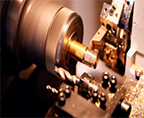
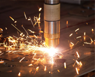
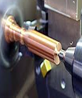

Наши принципы

Приоритетами в производственной деятельности компании являются высокое качество выполнения заказа, а также удобство для клиента во взаиморасчетах. Для нас выполнение заказа по металлообработке не только возможность эффективной реализации своих возможностей, но и налаживание долгосрочных отношений с партнерами. Мы готовы выполнять заказы любого объема.

ЭКОНОМЬТЕ СВОЕ ВРЕМЯ И РАЗГРУЖАЙТЕ СВОИ МОЩНОСТИ, РАЗМЕЩАЯ ЗАКАЗЫ У НАС!
Металлообработка
1
Широко применяя технологии по механической обработке изделий из металла и нержавеющей стали, а так же токарные и листогибочные работы, предлагает широкий спектр
услуг по обработке металла и неметаллических материалов по чертежам заказчика.
2
Мы изготавливаем продукцию, как из материала заказчика, так и из собственного материала. Высококвалифицированный персонал, обладающий необходимой профессионально-технической подготовкой для выполнения поступающих заказов любого уровня сложности.
Токарные работы

являются наиболее распространенным методом механической обработки изделий резанием. Работы проводятся для обработки наружных, внутренних, цилиндрических, конических, фасонных, торцевых поверхностей, вытачивания пазов и канавок, отрезки заготовки, нарезания наружной и внутренней резьбы.